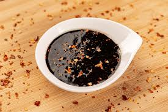

Teriyaki Sauce Recipe

Ingredients Needed:
1/3 Cup Soy Sauce
1/3 Cup Mirin
1/3 Cup Sake
1/8 Cup Sugar
Steps:
Mix all ingredient in pot
Bring mixture to boil
Reduce until mixture can coat back of spoon